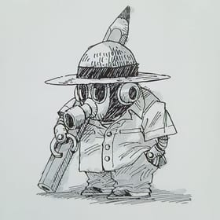

Currently Dr. SHI is an associate professor at Guangdong University of Technology (GDUT). Before that, he graduated from Sun Yat-Sen University with a PhD degree, supervised by Prof. Liang Lin. He was a visiting researcher in the University of Sydney and Microsoft Research Asia, working with Prof. Wanli Ouyang and Dr. Jingdong Wang, respectively. He serves as a Reviewer for a number of journals and conferences, such as IJCV, IEEE T-PAMI, CVPR, ICCV, etc.
Recently, almost all of my students have published top-tier conference/journal papers. All students in our group are talented, self-motivated and reliable. They own the most credit of following works which I was glad to work with.
Never stop looking for collaboration — please feel free to contact me via email (any question / suggestion / collaboration).(* indicates supervised students) [Full Paper List]
* This is a partial list, sorted by graduation year.